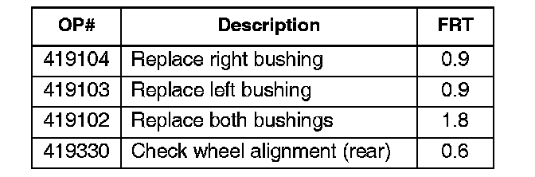
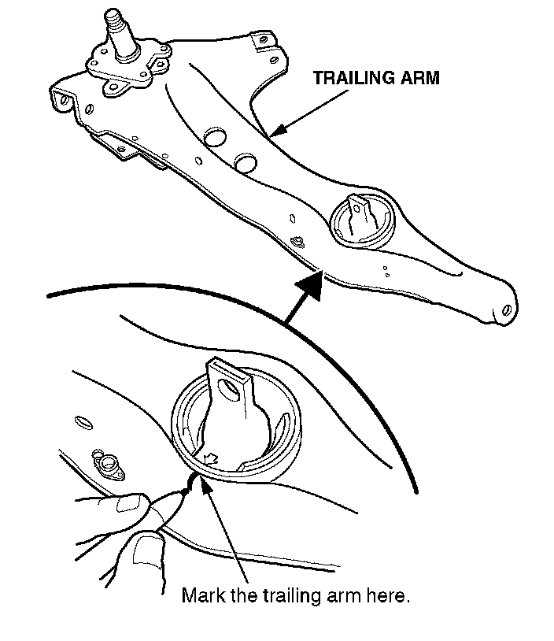
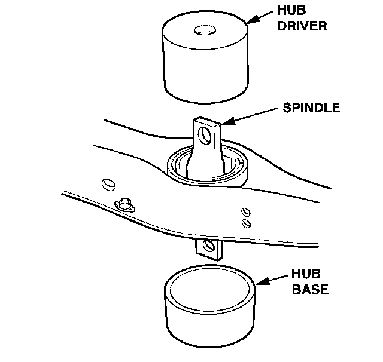
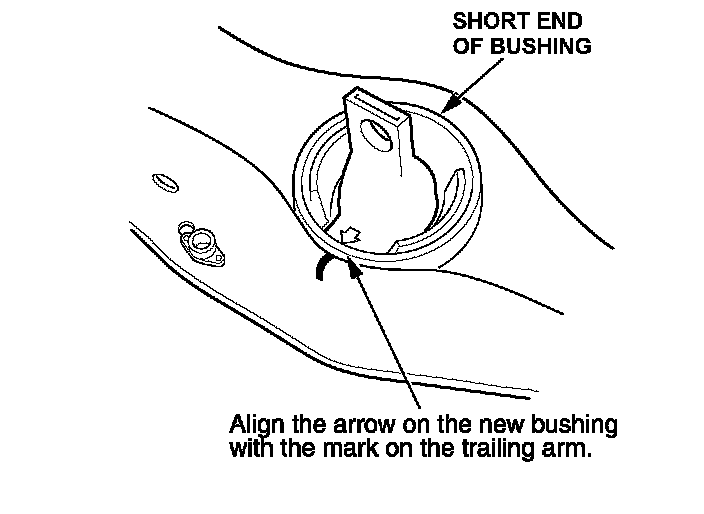
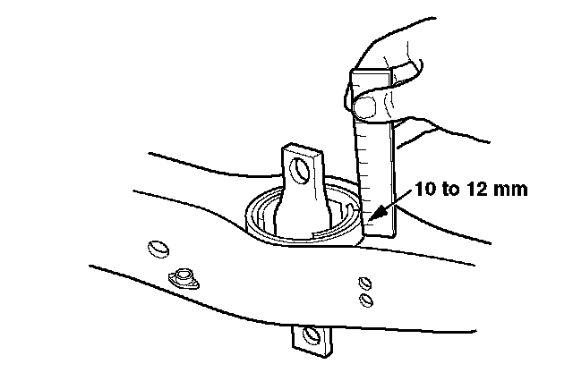

Suspension - Rear Suspension Clunk or Squeak on Bumps
06-010March 31, 2006
Applies To:
1990-01 Integra - ALL
Clunk or Squeak From Rear Suspension
SYMPTOM
A clunk or squeak from the rear suspension when going over rough or bumpy roads.
PROBABLE CAUSE
Broken rear trailing arm bushing(s).
NOTE:
If the bushing(s) are not broken, see service bulletin 90-014, Hear Trailing Arm Bushing Noise.
CORRECTIVE ACTION
Replace the rear trailing arm bushing(s).
PARTS INFORMATION
Rear Trailing Arm Bushing
1990-93 Integra: P/N 52385-5K7-N02
1994-01 Integra: P/N 52385-SR3-000
TOOL INFORMATION
Trailing Arm Bushing Installation Set:
T/N 07AAF-5K7A1 30
WARRANTY CLAIM INFORMATION

In warranty:
The normal warranty applies.
Failed Part: 1990-93 Integra: P/N 52385-5K3-N02
1994-01 Integra: P/N 52385-SR3-000
Defect Code: 01801
Symptom Code: 04205
Skill Level: Repair Technician
Out of warranty:
Any repair performed after warranty expiration may be eligible for goodwill consideration by the District Parts and Service Manager or your Zone Office. You must request consideration, and get a decision, before starting work.
REPAIR PROCEDURE
NOTE:
ISIS online service manual information is only available for vehicles 1990 and newer.
1. Remove the rear trailing arm.
^ Refer to the suspension section of the appropriate service manual, or
^ 1990-93 Integra:
Online, enter keyword REAR SUSPENSION and
select Rear Suspension Illustrated Index from
the list.
^ 1994-01 Integra:
Online, enter keyword REAR SUSPENSION
then select Suspension Arms Removal/
Inspection from the list.

2. Mark the trailing arm at the arrow on the bottom of the bushing.

3. Place the arm on a hydraulic press, supported by the hub base, with the spindle facing up.
4. With the hub driver, press the old bushing out of the trailing arm.

5. Install the new bushing with the short end toward the outside of the vehicle. Align the arrow with the mark you made on the trailing arm.

6. Press the new bushing into the trailing arm until its edge is 10 to 12 mm above the surface of the arm.
7. Reinstall the trailing arm.
8. If necessary, repeat steps 1 thru 7 to install a new bushing in the other rear trailing arm.
9. Bleed the brake system.
NOTE:
ISIS online service manual information is only available for vehicles 1990 and newer.
^ Refer to the brakes section of the appropriate service manual, or
^ 1990-93 Integra:
Online, enter keyword BLEED and select Brake
System Bleeding Inspection and Adjustment
from the list.
^ 1994-01 Integra:
Online, enter keyword BLEED and select Brake
System Bleeding from the list.
10. Check the wheel alignment, and adjust it if necessary.
^ Refer to the suspension section of the appropriate service manual, or
^ Online, enter keyword ALIGNMENT and select Wheel Alignment - Front and Rear Toe Inspection/Adjustment from the list.

Disclaimer